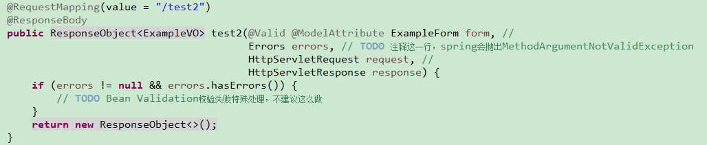

详解Bean Validation
- Name : 王伟
- Department : 智能金融部
- Email : hzwangwei6@corp.netease.com
Bean Validation是什么？
Bean Validation 是一个数据验证规范，Java EE 6的子规范
参考：https://en.wikipedia.org/wiki/Bean_Validation
验证对象属性、方法入参、方法返回值的合法性
实现者：hibernate-validator
Bean Validation如何使用？
使用Bean Validation验证对象的属性
// 1.有个POJO
public class Person {
// 2.使用Bean Validation constraint注解定义属性
@NotBlank
@Length(min = 1, max = 32)
private String name;
@NotNull
@Min(value = 1)
private Integer age;
public String getName() {
return name;
}
public void setName(String name) {
this.name = name;
}
public Integer getAge() {
return age;
}
public void setAge(Integer age) {
this.age = age;
}
}
public static void main(String[] args) {
// 3.获取目标对象实例
Person person = getTargetBeanInstance();
// 4.获取bean validation验证类(单例即可)
ValidatorFactory validatorFactory = Validation.buildDefaultValidatorFactory();
Validator validator = validatorFactory.getValidator();
// 5.验证对象属性
Set<ConstraintViolation<Person>> set = validator.validate(person);
// 6.输出验证结果
for (ConstraintViolation<Person> constraintViolation : set) {
System.out.println(constraintViolation.getMessage());
}
}
使用Bean Validation验证方法入参
public interface TestService {
// 1.使用Bean Validation constraint注解定义方法入参
Person create(@NotNull @Valid Person person, @NotBlank String channel);
}
public static void main(String[] args) throws Exception {
// 2.获取到目标类的实例
TestService testService = getTargetService();
// 3.获取目标类需要验证的方法
Method method = testService.getClass().getMethod("create", Person.class, String.class);
// 4.获取目标方法的入参
Object[] parameterValues = { person, channel };
// 5.获取bean validation验证类(单例即可)
ValidatorFactory validatorFactory = Validation.buildDefaultValidatorFactory();
Validator validator = validatorFactory.getValidator();
// 6.验证目标方法的入参
Set<ConstraintViolation<TestService>> set = validator.forExecutables().validateParameters(testService, method, parameterValues, new Class<?>[0]);
// 7.输出验证结果
for (ConstraintViolation<TestService> constraintViolation : set) {
System.out.println(constraintViolation);
}
}
使用Bean Validation验证方法返回值
public interface TestService {
// 1.使用Bean Validation constraint注解定义方法返回值
@NotNull @Valid Person create();
}
public static void main(String[] args) throws Exception {
// 2.获取到目标类的实例
TestService testService = getTargetService();
// 3.获取目标类需要验证的方法
Method method = testService.getClass().getMethod("create");
// 4.获取目标方法的返回值
Object returnValue = method.invoke(object);
// 5.获取bean validation验证类(单例即可)
ValidatorFactory validatorFactory = Validation.buildDefaultValidatorFactory();
Validator validator = validatorFactory.getValidator();
// 6.验证目标方法的返回值
Set<ConstraintViolation<TestService>> set = validator.forExecutables().validateReturnValue(testService, method, returnValue, new Class<?>[0]);
// 7.输出验证结果
for (ConstraintViolation<TestService> constraintViolation : set) {
System.out.println(constraintViolation);
}
}
Bean Validation工作机制
- constraint注解
- constraint注解验证器
- javax.validation.Validator实例化过程
- javax.validation.Validator验证过程
Bean Validation工作机制
----- constraint注解之@Size
java里的注解是没有继承关系的，所以constraint注解规范实际是在运行期间靠ConstraintHelper.isConstraintAnnotation方法做校验的，必须定义的属性有三个：message、groups、payload（有兴趣可以看下源码），姑且把所有constraint注解都必须定义的属性叫做“公共属性”， 当前constraint注解个性化的属性叫做“私有属性”
@Target({ METHOD, FIELD, ANNOTATION_TYPE, CONSTRUCTOR, PARAMETER })
@Retention(RUNTIME)
@Documented
@Constraint(validatedBy = { }) // 公共：当前约束注解的验证器
public @interface Size {
// 私有属性：最小个数
int min() default 0;
// 私有属性：最大个数
int max() default Integer.MAX_VALUE;
// 公共属性：验证不通过的输出消息，支持占位符，例如："个数必须在{min}和{max}之间"
String message() default "{javax.validation.constraints.Size.message}";
// 公共属性：约束注解在验证时所属的组别
Class[] groups() default { };
// 公共属性：约束注解的有效负载，目前没有处
Class[] payload() default { };
// 多约束，必须满足数组中的每个约束才算通过
// 非必选，能用到的不多，但是每个constraint注解都定义了该注解，姑且当作公共吧
@Target({ METHOD, FIELD, ANNOTATION_TYPE, CONSTRUCTOR, PARAMETER })
@Retention(RUNTIME)
@Documented
@interface List {
Size[] value();
}
}
Bean Validation工作机制
----- constraint注解验证器
// 1.constraint注解验证器必须实现的接口：javax.validation.ConstraintValidator
public class SizeValidatorForCollection implements ConstraintValidator<Size, Collection<?>> {
private int min;
private int max;
@Override
public void initialize(Size parameters) {
// 2.初始化注解的私有属性，验证时会用到
min = parameters.min();
max = parameters.max();
}
@Override
// 3.验证有效性
public boolean isValid(Collection<?> collection, ConstraintValidatorContext constraintValidatorContext) {
if ( collection == null ) {
return true;
}
int length = collection.size();
return length >= min && length <= max;
}
}
Bean Validation工作机制-Validator实例化
Bean Validation工作机制
----- javax.validation.Validator验证过程
- Bean Validation组
- Bean Validation组序列
Bean Validation组
Bean Validation组的概念是为了对约束分组，进而可以分组验证
默认组：javax.validation.groups.Default
注意：组也有继承的属性，对某组进行约束验证的时候，也会对其所继承的组(父类)进行验证。
interface GroupA {}
interface GroupA1 extends GroupA {}
interface GroupB {}
class Person {
@NotBlank(groups = GroupA.class)
private String name;
@NotNull(groups = {GroupA1.class, GroupB.class})
private Integer age;
@NotBlank(groups = GroupB.class)
private String gender;
}
Bean Validation组序列
----- javax.validation.GroupSequence
核心作用：定义组的验证顺序
interface GroupA {}
interface GroupB {}
interface GroupC {}
@GroupSequence({GroupA.class, GroupB.class, GroupC.class})
interface Group {}
class Person {
@NotBlank(groups = GroupA.class)
private String name;
@NotNull(groups = {GroupB.class})
private Integer age;
@NotNull(groups = {GroupC.class})
@Valid
private Address address;
}
Bean Validation工作机制
----- javax.validation.Validator验证过程
Set<ConstraintViolation<T>> validate(T object, Class<?>... groups)
-
判断目标Bean是否有约束，即是否使用了Bean Validation注解
判断的过程中会创建class与BeanMetaData的关系并缓存
-
计算验证顺序，参考DefaultValidationOrder
先Group再Group的父类; 先Group再GroupSequence; 先当前Bean再级联Bean;
-
按顺序分组验证
反射获取到验证的值，使用@Constraint中定义的validatedBy(验证器，需要实现ConstraintValidator)来验证值的合法性
-
约束违规的消息解析，参考：AbstractMessageInterpolator
消息解析有优先顺序，ValidationMessages*.properties > ContributorValidationMessages*.properties > org.hibernate.validator.ValidationMessages*.properties
-
BTW
开启fail fast模式：configure.addProperty(HibernateValidatorConfiguration.FAIL_FAST, "true");
Bean Validation回顾
- constraint annotation：约束注解
- constraint annotation validateBy：验证器
- Bean Validation 组：分组、定义顺序
- javax.validation.Validator：实例化过程
- javax.validation.Validator：验证过程
Bean Validation如何做企业级应用？
Bean Validation企业级应用
- 如何定义自己的约束？
- spring-mvc如何集成Bean Validation
- 普通方法如何集成Bean Validation
- dubbo：RPC
如何自定义Bean Validation？
第一步：定义约束注解
// 定义一个日期约束，必须是晚于指定日期
@Target({ METHOD, FIELD, ANNOTATION_TYPE, CONSTRUCTOR, PARAMETER })
@Retention(RUNTIME)
@Documented
@Constraint(validatedBy = { PastExtValidatorForDate.class, PastExtValidatorForCalendar.class })//公共：验证器，可以多个
public @interface PastExt {
// 私有：指定日期
String value();
// 公共：验证不通过的输出消息
String message() default "{com.netease.validator.constraints.PastExt.message}";
// 公共：
Class[] groups() default {};
// 公共：
Class[] payload() default {};
@Target({ METHOD, FIELD, ANNOTATION_TYPE, CONSTRUCTOR, PARAMETER })
@Retention(RUNTIME)
@Documented
@interface List {
PastExt[] value();
}
}
如何自定义Bean Validation？
第二步：定义ConstraintValidator
// 必须实现接口：ConstraintValidator，PastExt是约束注解，Date是约束的值类型
public class PastExtValidatorForDate implements ConstraintValidator<PastExt, Date> {
String value;
@Override
public void initialize(PastExt constraintAnnotation) {
value = constraintAnnotation.value();
}
// 具体的约束验证逻辑
@Override
public boolean isValid(Date value, ConstraintValidatorContext context) {
// null values are valid
if (value == null) {
return true;
}
return value.getTime() < DateHelper.parseDate(this.value).getTime();
}
}
spring-mvc如何集成Bean Validation
-
org.springframework.validation.beanvalidation.LocalValidatorFactoryBean
创建javax.validation.Validator实例，使用org.springframework.context.MessageSource替代ValidationMessages*.properties
-
org.springframework.web.method.support.HandlerMethodArgumentResolver
通过参数解析器校验请求参数，spring mvc支持Bean Validation的参数解析器如下：
org.springframework.web.servlet.mvc.method.annotation.RequestResponseBodyMethodProcessor org.springframework.web.method.annotation.ModelAttributeMethodProcessor@RequestBody @ResponseBody @ModelAttribute
我们如何在spring-mvc中使用Bean Validation
- 使用Bean Validation约束注解定义请求参数 
- Bean Validation校验失败异常处理：@ControllerAdvice
普通方法如何集成Bean Validation
思路：通过AOP拦截方法执行计划，做参数校验
想偷懒有现成的吗？
org.springframework.validation.beanvalidation.MethodValidationPostProcessor
如何使用？
xml配置： <bean class="org.springframework.validation.beanvalidation.MethodValidationPostProcessor"/>
MethodValidationPostProcessor实现原理
- BeanPostProcessor && 拦截@Validated修饰的类（可以从父类继承注解）
- MethodValidationInterceptor：校验方法入参以及返回值
如何用MethodValidationPostProcessor开发呢？
xml配置 && @Validated修饰类 && Bean Validation约束注解修饰参数 && ConstraintViolationException异常处理
dubbo如何集成Bean Validation
dubbo支持JSR303标准注解验证，具体可参考其官网
ValidationFilter && JValidator
-
Consumer端开启Bean Validation：
<dubbo:reference id="xxxService" interface="x.xx.XXXService" validation="true" />
-
Provider开启Bean Validation：
<dubbo:service interface="x.xx.XXXService" ref="xxxService" validation="true" />
为什么使用Bean Validation
- 官方slogan：Constrain once, validate everywhere
- 规范！！！
常见问题
-
如何自定义错误消息？
ValidationMessages*.properties || ContributorValidationMessages*.properties
-
嵌套的对象为什么不做验证？
检查是否使用了注解：@Valid
-
参数校验能否有一个不通过就返回，后续属性就不要再验证了？
开启failFast
Configuration<?> configure = Validation.byDefaultProvider().configure(); configure.addProperty(HibernateValidatorConfiguration.FAIL_FAST, "true"); Validator validator = configure.buildValidatorFactory().getValidator();
Thanks
- Q/A
- 如果您觉得还不错，还请关注微信公众号：

- 微信扫描上方二维码，或者搜索并关注微信公众号： 众山神
/